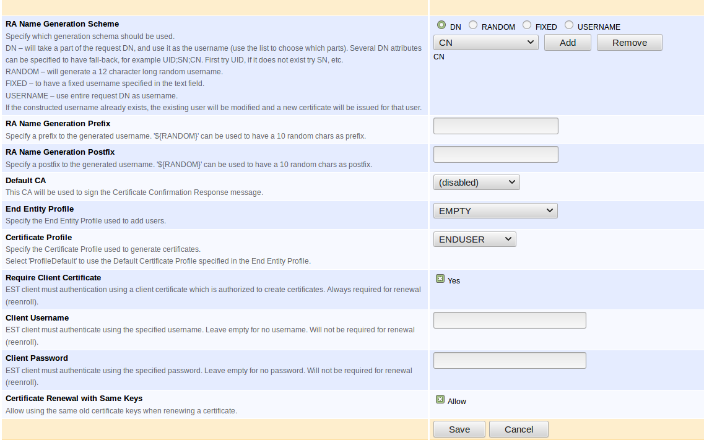

EJBCA 7.2.1 Release Notes
The PrimeKey EJBCA team is proud to announce the release of EJBCA 7.2.1.
Highlights
AWS S3 Publisher
The AWS S3 (Amazon Simple Storage Service) Publisher allows for publishing certificates and CRL files to an AWS S3 bucket.
The publisher uses the AWS CLI to perform the S3 bucket operations. The AWS CLI is installed by default on the AWS EJBCA Cloud instance, and may be installed separately on other EJBCA software installations.
Configuration of the S3 Publisher in EJBCA Admin Web.
You will find it among the other Publisher types in EJBCA Admin Web. For more information regarding the AWS S3 Publisher, refer to the EJBCA Cloud documentation.
EST Name Generation Enhancements
Up until now, End Entity username has been randomly generated for every 'simpleenroll' request using EST, making certificate life cycle management slightly challenging using the protocol. This has been addressed by introducing a configurable name generation scheme for EST, similar to how CMP aliases can be configured. The name generation scheme may be configured as follows:
DN: Use the desired part of DN (CN, SN etc.) from the CSR as End Entity username.
RANDOM: Generates a random username for each request. (Default behavior. Enforced in previous versions of EJBCA).
FIXED: Username pre-defined for all requests using the EST alias.
USERNAME: Uses entire request DN as End Entity username.

EJBCA Admin Web - EST Configuration
Renewal
End Entity username can now be determined using EST, an authenticated 'simpleenroll' request matching an already existing username (e.g. CN part of DN) and will be treated as certificate renewal. Requests matching an existing End Entity will result in a new certificate issued for it.
For more information, see EST.
IPv6 Support
Though EJBCA has supported IPv6 up until now, there has been a few limitations to it. As of EJBCA 7.2.1, IPv6 has been thoroughly tested and improved for certain use cases. Please see Change Log for details.
Upgrade Information
Review the EJBCA 7.2.1 Upgrade Notes for important information about this release. For upgrade instructions and information on upgrade paths, see Upgrading EJBCA.
Change Log: Resolved Issues
For full details of fixed bugs and implemented features in EJBCA 7.2.1, refer to our JIRA Issue Tracker.
New Features
ECA-8255 - AWS S3 Publisher for publishing certs and CRLs to an S3 bucket
ECA-8355 - EST Name Generation Enhancements
ECA-8232 - IPv6 RFC compliant HREF links in EJBCA
Improvements
ECA-8356 - Exceptions caught by the EST servlet are not logged properly
ECA-8266 - Possibility to issue a final OCSP responses with unlimited end date 99991231235959Z
Bug Fixes
ECA-8099 - CA created with "Signed By External CA" has Serial Number Octet Size -1
ECA-8265 - Security Issue
ECA-8320 - SCP Publisher uses managing admin to sign payload
ECA-8322 - CertificateCrlReader does not handle revocation publications correctly
ECA-8365 - Error message and stack trace is lost when there are repeated CT log errors
ECA-8364 - Regression: CT log "Acquire semaphore was interrupted"
ECA-8363 - IPv6 Bug: SAN IPv6 field ignored on issuance
ECA-8351 - Regression: possible to delete EE profile with entities registered. EE becomes uneditable after deleting its EE profile
ECA-8312 - EJBCA installation fails on Windows SQL Server